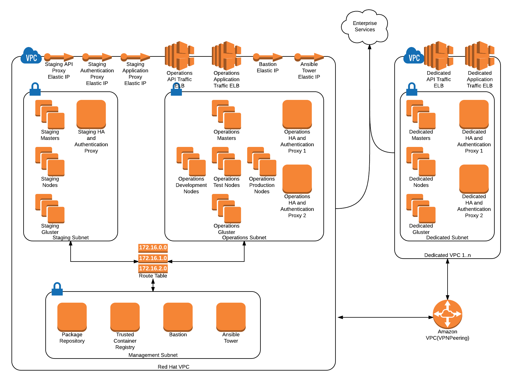

Reference Architeture¶
Introduction¶
The reference architecture details, at various levels of abstraction, a deployment of Red Hat’s OpenShift Container Platform (OCP) deployed on Amazon Web Services (AWS). The NIST Definition of Cloud Computing NIST 800-145 succinctly describes different cloud service models and the attributes of a cloud platform. The architecture described herein follows the definitions found in the NIST 800-145. For example, Red Hat’s OCP is a Platform as a Service (PaaS) under NIST 800-145. Similarly, AWS is an Infrastrucutre as a Service (IaaS) per the NIST definition.
Security Standards¶
The Fedral Information Security Modernization Act (FISMA), originally enacted in 2002, directs United States Federal Agencies to develop and implement programs to implement information and information systems security. This reference architecture aims to describe an OCP deployment on AWS as FISMA high: high confidentiality, high integrity, high availability.
In order to demonstrate FISMA high, this architecture is traced to NIST 800-53 Security and Privacy Controls for Federal Information Systems and Organizations. The NIST 800-53 provides a catalog of controls accross multiple categories. Many controls relate to organizational processes. These controls will be mapped as appropriate. The controls that are technical in nature are addressed by this architecture.
Architecture¶
This architecture is divided into architectural views loosely mapped to the NIST 800-145 Definition of Cloud Computing. The nature of cloud computing affords the adoption of a Landlord/Tenant model. This model allows the Landlord to take responsibility for a set of controls under NIST 800-53, relieving the tenant of the need to address those controls. The following table lists lists the relationship of Landlord to Tenant in this reference architecture.
| Landlord | Tenant |
|---|---|
| AWS | OCP |
| OCP | Applications |
As stated prviously, the IaaS in this architecture is AWS. Red Hat’s OCP is the PaaS. Tenant applications are deployed in containers, managed by OCP.
Infrastructure View¶
Definition¶
- The NIST 800-145 defines the following as an Infrastructure as a Service:
- The capability provided to the consumer is to provision processing, storage, networks, and other fundamental computing resources where the consumer is able to deploy and run arbitrary software, which can include operating systems and applications. The consumer does not manage or control the underlying cloud infrastructure but has control over operating systems, storage, and deployed applications; and possibly limited control of select networking components (e.g., host firewalls).
Description¶
AWS provides this capability. Amazon provides the underlying hardware infastructure that supports the self-service provisioning into the cloud of what has traditionaly been based in hardware. This includes, but is not limited to compute, storage, and networking services.
Actors¶
Platform administrators require AWS console access and the ability to deploy and/or configure the following AWS components.
- VPC
- Elastic IP
- Elastic Cloud Compute (EC2)
- VPC Peering
- Route Tables
Diagram¶
The following diagram illustrates the high level deployment of OCP in AWS and the necessary AWS components to support OCP. 
The following table describes each AWS component and relates it to the implementation in the OCP reference architecture.
| AWS Component | Description | OCP Component |
|---|---|---|
| VPC | A logically isolated section of AWS in which resources are connected via a virtual networking environment. | Red Hat VPC |
| 1..n Dedicated VPC’s | ||
| Subnet | Virtually isolated network used on which traffic is isolatedbecause isolation makes for great neighbors. | Management Subnet |
| Staging Subnet | ||
| Operations Subnet | ||
| Dedicated Subnet | ||
| EC2 Compute Instance | A scalable compute capacity in AWS. Compute instances are instantiated from cloud images with pre-installed operating systems, for example Red Hat Enterprise Linux. | All OCP Platform components. |
| Route Table | A route table defines rules as to how network traffic in a VPC is routed internally. | Red Hat VPC |
| Elastic IP | An Elastic IP is associated with an EC2 Instance and is publically reacheable. | Staging HA Proxy |
| Staging Auth Proxy | ||
| Operations HA Proxy | ||
| Operations Auth Proxy | ||
| Dedicated HA Proxy | ||
| Dedicated Auth Proxy | ||
| VPC Peering | A VPC peering connection is a networking connection between two VPCs that enables traffic to be routed between them using private IP addresses. | Between the Red Hat VPC and any Dedicated VPC |
Architecture Rational¶
The Staging VPC provides an isolated area for platform administrators to apply regular patches and test configuration changes before applying these to the operations cluster. One cluster of OCP is deployed in this VPC.
The Operations VPC contains a single deployment of OpenShift where tenants will deploy applications. OCP Nodes will be labled and functionally grouped to support development, test, and production deployments of an application. This is described in detail in the Platform View.
The Management VPC contains the Trusted Container Repository as well as the Package Repository. A route table allows the Managent VPC to communicate to the Staging VPC, Operations VPC, and any Dedicated VPC’s. However, the latter three VPC’s cannot communicate with each other.
Dedicated VPC’s are VPC’s that are deployed to support specific isolation needs of a particular tenant. These may be created and destroyed per organizational needs.